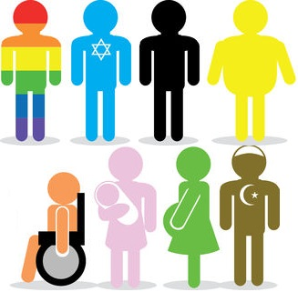

As sociedades capitalistas contemporâneas tendem a desenvolver certos padrões elitistas de categorizar o que é “normal”. Há um padrão de vida vendido como o melhor, além de haver um padrão de comportamento socialmente considerado como a norma. Isso é chamado de normatização. As minorias são setores sociais que fogem das diversas normatizações impostas e, por mais contraditório que pareça, elas são a maioria em números absolutos.
O capitalismo vende a ideia de que quem não atende à classificação normativa do sistema não tem valor, é um ser reduzido. O interessante é que os padrões normativos servem como modo de se manter a hegemonia das classes dominantes. O padrão normativo de excelência nesse sistema é mantido por pessoas brancas, com altos resquícios de um sistema misógino, de classe média para a alta, heterossexuais, consideradas produtivas, etc.
